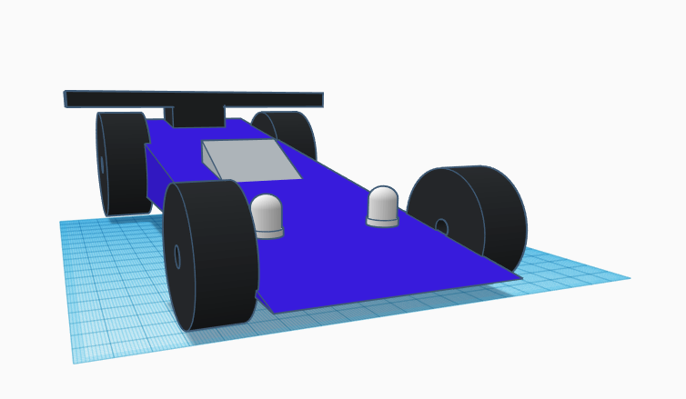

House
Tinker projectsMy Projects
This is a page about my Tinker Race CAr Project. It is a 3D model in which I can print out but its a little hard to print out. The lights can be made to actually work but I gave up on it.
This is a page about my Tinker Race CAr Project. It is a 3D model in which I can print out but its a little hard to print out. The lights can be made to actually work but I gave up on it.